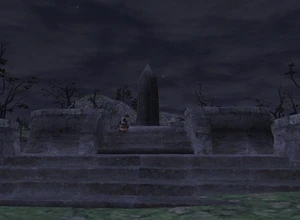

Level 75 reference · Zenith rules
|


Walkthrough
- Talk to Elki in the Bat's Lair Inn; his grandfather is buried at a monument at the top of Zegham Hill in North Gustaberg. He gives you to the key item Bouquet for the Pioneers lay at the foot of the grave.
- Follow the paths up to the top of Zegham Hill in North Gustaberg to find the monument at J-7.
- Examine the Palborough Pioneers Monument to place the bouquet; you see the name of Elki's ancestor, Omran, and a partially readable name, Vig****t O**.
- Talk to Elki again to complete the quest. He doesn't seem to recognize the partial name but he might if you get more information.
Game Description
Client: Elki (Bat Lair Inn, Bastok Mines)
Summary:
- Go to North Gustaberg and lay Elki's bouquet at the foot of the monument honoring the Palborough Pioneers.
Adapted from Eden Wiki: Hearts of Mythril · Contributors and history · CC BY-SA 4.0. Revision 44171. Layout, links and optional background text adapted for Zenith.